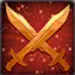
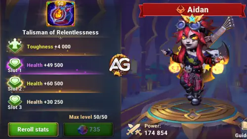
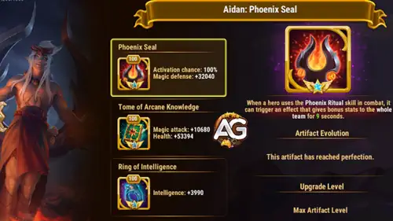
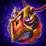
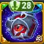
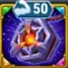
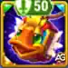
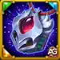

エイダン攻略：レリックとスキル ヒーローウォーズ アライアンス
- 著者：アレクサンドレ・ドミンゴス。 。
エイダンは、敗北寸前のチームを、なかなか倒れないチームへと変えられるヒーローです。このヒーローウォーズ アライアンスのガイドでは、回復、シールド、伝説のレリックを詳しく解説します。その生存力がどこから生まれるのか、そしてどの強化に最初にリソースを使うべきかを確認していきます。
注目したいのは、エイダンのスキルが犠牲と回復を結び付けている点です。味方のスキルによるダメージは回復対象を増やし、カイラは復活によって再び戦う機会を得ます。さらにレリックが防御と知力の成長を加えます。重要なのは、自分のエイダンに必要なのが強力な回復なのか、それとも回復を続けられるだけの耐久力なのかを見極めることです。


エイダン攻略の目次
ヒーローウォーズ アライアンスのエイダンとは？
エイダンはカオスの道に属する後衛のヒーラーです。回復、一時的なHP増加、緊急シールドによって味方を戦い続けさせるのが役割で、カイラには追加の復活支援も提供します。

- メインクラス： ヒーラー
- 配置： 後衛
- メインステータス： 知力
- 陣営： カオスの道
- 主なシナジー： カイラ、カオスの味方、味方のスキルによるダメージを受けるチーム。
炎の抱擁は、前回の使用以降に味方のスキルでダメージを受けた味方を回復します。そのため、味方がHPを犠牲にする行動が回復サイクルの一部になります。カオスの味方は炎の抱擁や複数のレリック効果でより強力な回復を受け、カイラには専用の復活メカニズムがあります。
私が最初に重視するのは、エイダンを生存させることです。強力な回復計算式も、スキルを使い続けられてこそ役立ちます。また、自身の必殺スキルでは最大HPの一部を消費します。
エイダンの長所と短所 - ヒーローウォーズ アライアンス
✅ 長所
- 味方のスキルによるダメージの後に複数の味方を回復できる。
- カオスのヒーローへの回復量が多い。
- 緊急シールドでHPの低い味方を守れる。
- カイラ専用の復活支援を持つ。
- レリック強化で防御、回復、累積する知力が追加される。
❌ 短所
- 必殺スキルで自身の最大HPの20%を消費する。
- 直接ダメージは限られ、記載された行動妨害もない。
- カイラの復活にはチームにカイラが必要。
- シールドの保護は4秒しか続かない。
- 知力を伸ばすには、味方スキルのダメージで発動しきい値に達する必要がある。
エイダン - タリスマン別の最大ステータス比較
以下の最大育成時の数値を、この後の計算の基準にします。戦闘中の一時的なHPや知力の増加前の値であり、レリックによるステータス増加を再び足すことはありません。
| ステータス | タリスマン1: 灰のタリスマン | タリスマン2: 不屈のタリスマン |
|---|---|---|
| 17,843 | 15,843 | |
| 3,679 | 3,679 | |
| 4,137 | 4,137 | |
| 1,129,442 | 1,315,480 | |
| 37,314 | 35,314 | |
| 230,375 | 203,585 | |
| 39,840 | 39,840 | |
| 43,200 | 41,200 | |
| 3,380 | 7,780 | |
 総合パワー | 278,122 | 279,449 |
エイダンのタリスマンガイド - ヒーローウォーズ アライアンス
戦闘で使うタリスマンは一つだけ選びます。適用されるのは装備中のタリスマンのボーナスだけで、両方を所有してもステータスは合算されません。スキンのボーナスとは異なり、この選択によってエイダンが戦闘に持ち込む強みが変わります。再抽選の三つのスロットは、合計ボーナスで評価してください。
1 - 灰のタリスマン

| タリスマン | メインステータスのボーナス |
|---|---|
| 知力 +2,000 |
| スロット1 | スロット2 | スロット3 | 再抽選ボーナス合計 |
|---|---|---|---|
| 魔法攻撃 +6,600 | 魔法攻撃 +6,600 | 魔法攻撃 +6,600 | 魔法攻撃 +19,800 |
知力ボーナスから得られるのは 魔法攻撃+6,000、魔法防御+2,000、物理攻撃+2,000です。これに再抽選の合計ボーナスである +19,800 魔法攻撃が加わることで、灰のタリスマンは炎の抱擁、自己回復、魔法攻撃に応じて強化されるレリック効果を伸ばします。
2 - 不屈のタリスマン

| タリスマン | メインステータスのボーナス |
|---|---|
| 粘り強さ +4,000 |
| スロット1 | スロット2 | スロット3 | 再抽選ボーナス合計 |
|---|---|---|---|
| HP +60,500 | HP +60,500 | HP +60,500 | HP +181,500 |
不屈のタリスマンで得られるのは +4,000 粘り強さ と、再抽選の合計ボーナスである +181,500 HPです。提示された最大育成構成では HP1,315,480、粘り強さ7,780に達します。最大HPが増えると、フェニックスの儀式のHP依存の数値が上がります。粘り強さはHP50%未満で敵からのダメージを抑える助けになりますが、エイダン自身が与える自己ダメージは軽減しません。
エイダンにはどちらのタリスマンを使うべき？
回復を強化するなら、私の基本の選択は灰のタリスマンです。 魔法攻撃230,375のとき、炎の抱擁による通常の対象あたりの回復量は 73,912.5 です。一方、不屈のタリスマンでは 65,875.5 になります。また、灰のタリスマンはレベル10のダメージ軽減と、知恵の代償の初回の知力増加も強化します。 タリスマンガイド でもエイダンの最初のタリスマンを推奨しています。
エイダンに耐久力が必要なら、不屈のタリスマンへ切り替えます。 このタリスマンでは 最大HPが186,038多く、粘り強さが4,400多くなります 。これは提示された完成構成での比較です。フェニックスの儀式による味方のHP増加は 228,288.4から265,496へ上がりますが、自身のHP消費も 225,888.4から263,096へ増えます。粘り強さの効果は低HPであることと攻撃者のメインステータスに左右され、固定の割合でダメージを軽減するわけではありません。
アレクサンドレのヒント： エイダンが生き残っていてもチームの回復が足りないなら、灰のタリスマンから試してください。回復サイクルを維持する前に倒れるなら、不屈のタリスマンを試します。総合パワーだけでなく、チームを戦い続けさせられるかどうかで結果を判断しましょう。
エイダンの伝説のレリックスキル育成優先度 - ヒーローウォーズ アライアンス
エイダンの回復、シールド、レリック強化を理解し、両方のタリスマンを比較して、チームを戦闘中に生存させるスキルから育成しましょう。
以下のスキルの表示順はそのままにしています。基本スキルへの私の推奨投資順は 炎の抱擁、炎の盾、フェニックスの儀式、最後に炎の絆です。レリックスキルは必要なレリックレベルで解放されます。優先度の表示は投資価値を表し、別の手動解放順を意味するものではありません。
すべての計算では上記の最大ステータスを使います。 魔法攻撃230,375、HP1,129,442 が灰のタリスマンの値で、 魔法攻撃203,585、HP1,315,480 が不屈のタリスマンの値です。小数を含む結果は、ゲーム内の端数処理前の計算式の値を示します。チームのHPや戦闘中に後から加わるバフによって、実際の結果は変わる場合があります。
| レリックレベル | スキルの解放または強化 |
|---|---|
| 1 | フェニックスの契約：カイラの復活と味方への回復。 |
| 10 | 炎の抱擁：回復を受けた味方の、攻撃ごとの被ダメージ軽減。 |
| 20 | 炎の盾：シールドが解除されたときの回復。 |
| 30 | 知恵の代償：味方スキルのダメージによる知力の累積。 |
レベル30でのレリックによる総ステータス増加： HP +215,429 、魔法攻撃 +64,542。これらは育成によるステータス増加であり、戦闘中の知恵の代償の一時的な累積とは別です。
第1スキル - フェニックスの儀式（必殺スキル）
ゲーム内説明： エイダンは自身の最大HPの20%を消費し、味方の現在HPと最大HPを増やします。対象の味方は8秒間炎上し、その間に追加されたHPを失います。カイラが倒れている場合は復活させます。味方ヒーローのHPが25%未満になると、エイダンのスキルはその味方にダメージを与えなくなります。

スキル解説： エイダンは自身のHPの一部を使って、味方に一時的な余裕を与えます。味方の増加量は HPの20% + 2400で、自身が消費する量は 自身の最大HPの20%です。味方に追加されたHPは炎上によって 8 秒かけて失われるため、これは恒久的なHP強化ではなく一時的な保護です。カイラが倒れていれば復活させます。また、味方のHPが 25%未満になるとスキルによる味方へのダメージは止まりますが、敵からの攻撃に無敵になるわけではありません。
タリスマン1：灰のタリスマンでの計算式
- 味方の現在HPと最大HPの増加： HPの20% + 2400 = 228,288.4 (0.20 × 1,129,442 + 2,400)
- エイダン自身のHP消費： 最大HPの20% = 225,888.4 (0.20 × 1,129,442)
タリスマン2：不屈のタリスマンでの計算式
- 味方の現在HPと最大HPの増加： HPの20% + 2400 = 265,496 (0.20 × 1,315,480 + 2,400)
- エイダン自身のHP消費： 最大HPの20% = 263,096 (0.20 × 1,315,480)
スキルアニメーション情報： 炎上時間： 8 秒。炎上による合計の減少量は、付与された追加HPと同じです。キーワード：HP増加、炎上、復活、自己ダメージ。
育成優先度： 高 – 一時的なHPの余裕とカイラの復活は、劣勢の戦闘を救える効果です。通常の回復と緊急シールドに限られたリソースを先に使いながら、このスキルも育成しておきましょう。自身のHP消費があるため、安定した回復サイクルの中で最も働きます。
第2スキル - 炎の抱擁
ゲーム内説明： HPの割合が最も低い味方と、前回の使用以降に味方スキルのダメージを受けた味方のHPを回復します。カオスのヒーローはより多く回復します。

スキル解説： このスキルは、エイダンの回復サイクルを動かす中心です。HPの割合が最も低い味方と、前回使用してから味方スキルで傷ついた味方を回復します。通常の回復式は 魔法攻撃の30% + 4800、カオス向けの回復式は 魔法攻撃の60% + 9600です。カオス用の式は通常の式の二倍なので、同じ陣営のシナジーが特に重要になります。
タリスマン1：灰のタリスマンでの計算式
- 通常の味方への回復： 魔法攻撃の30% + 4800 = 73,912.5 (0.30 × 230,375 + 4,800)
- カオスの味方への回復： 魔法攻撃の60% + 9600 = 147,825 (0.60 × 230,375 + 9,600)
タリスマン2：不屈のタリスマンでの計算式
- 通常の味方への回復： 魔法攻撃の30% + 4800 = 65,875.5 (0.30 × 203,585 + 4,800)
- カオスの味方への回復： 魔法攻撃の60% + 9600 = 131,751 (0.60 × 203,585 + 9,600)
炎の抱擁（強化スキル）- 伝説のレリック：レベル10
ゲーム内説明： 炎の抱擁で回復した味方は、8秒間、各攻撃から受けるダメージが減少します。

スキル解説： 回復を受けた味方は、その後 8 秒の間、攻撃ごとの被ダメージも軽減されます。軽減量は 魔法攻撃の10%です。これはエイダンの魔法攻撃から求める固定値であり、敵のダメージを10%減らす効果ではありません。回復スキルに、回復した味方が続く攻撃を生き延びるのを助けるという、もう一つの役割が加わります。
タリスマン1：灰のタリスマンでの計算式
- 各攻撃のダメージ軽減量： 魔法攻撃の10% = 23,037.5 (0.10 × 230,375)
タリスマン2：不屈のタリスマンでの計算式
- 各攻撃のダメージ軽減量： 魔法攻撃の10% = 20,358.5 (0.10 × 203,585)
スキルアニメーション情報： レジェンダリー効果の保護時間： 8 秒。キーワード：回復。レジェンダリー強化の解放条件は レリックレベル10。
育成優先度： 非常に高 – 基本スキルでは私が最初に育てるものです。味方が犠牲を払うサイクルの中でHPを戻し、レベル10のレリック強化で回復後の防御も追加されます。回復を強化すると、エイダン自身とダメージ役の両方が行動を続けられます。
第3スキル - 炎の絆
ゲーム内説明： 最大HPの2.5%を、HPの割合が最も高い味方と、HPが80%を超えているほかの味方から奪います。エイダンはその量を現在HPと最大HPとして獲得し、自身を回復します。

スキル解説： エイダンが受け取るのは 最大HPの2.5% で、対象はHPの割合が最も高い味方と、HPが 80%を超えるほかの味方です。犠牲にされたHPの合計を現在HPと最大HPとして獲得し、さらに自身を 魔法攻撃の50% + 10000回復します。これにより戦い続けやすくなり、炎の抱擁には味方からダメージを受けた対象が増えます。
移動するHPの量は対象の味方によって変わります。 獲得HP合計 = 各対象の（0.025 × 最大HP）の合計。味方の実際のHPを使って計算してください。エイダン自身の最大HPだけでは、この合計は求められません。
タリスマン1：灰のタリスマンでの計算式
- エイダンの自己回復： 魔法攻撃の50% + 10000 = 125,187.5 (0.50 × 230,375 + 10,000)
タリスマン2：不屈のタリスマンでの計算式
- エイダンの自己回復： 魔法攻撃の50% + 10000 = 111,792.5 (0.50 × 203,585 + 10,000)
スキルアニメーション情報： 犠牲にする量： 対象の味方の最大HPの2.5%。追加の味方が対象になる条件： HP80%超。キーワード：回復、HP増加、自己ダメージ。
育成優先度： 中 – 自己回復はエイダンの生存に役立ちますが、通常は味方への直接回復と緊急シールドを先に育てる価値があります。固定の2.5%の移動量は味方のHPに依存するため、このスキルを育てただけで割合が増えるものと考えないようにしましょう。
第4スキル - 炎の盾
ゲーム内説明： エイダン、または戦闘開始時からいた味方のHPが30%未満になるとシールドを付与します。シールドは4秒間、物理・魔法ダメージを吸収し、クールダウンはヒーローごとに独立して15秒です。

スキル解説： エイダンまたは対象条件を満たす味方のHPが 30%未満になると、物理・魔法ダメージを吸収するシールドが 4 秒間発生します。耐久値は 味方ヒーローの最大HP合計の16%です。ヒーローごとに独立した 15秒のクールダウンがあるため、ある味方のシールドが発動しても、全員のシールドがクールダウンに入るわけではありません。
耐久値は次の式で求めます。 シールド = 0.16 × 味方の最大HP合計。どちらのタリスマンでも、完全な数値を出すにはほかの味方の最大HPが必要です。同じ初期チーム構成なら、不屈のタリスマンによる追加分は シールド耐久値29,766.08（0.16 × 186,038） で、これはエイダンの追加HPだけによる増加です。
炎の盾（強化スキル）- 伝説のレリック：レベル20
ゲーム内説明： 炎の盾が解除されると、守られていた味方が回復します。カオスのヒーローはより多く回復します。

スキル解説： シールドが解除されると、守られていた味方は次の量の回復を受けます。 魔法攻撃の30% が通常の味方への回復、 魔法攻撃の60% がカオスの味方への回復です。シールドで低HP時の時間を稼ぎ、その後の回復によって保護終了後の立て直しを助けます。
タリスマン1：灰のタリスマンでの計算式
- 通常の味方への回復： 魔法攻撃の30% = 69,112.5 (0.30 × 230,375)
- カオスの味方への回復： 魔法攻撃の60% = 138,225 (0.60 × 230,375)
タリスマン2：不屈のタリスマンでの計算式
- 通常の味方への回復： 魔法攻撃の30% = 61,075.5 (0.30 × 203,585)
- カオスの味方への回復： 魔法攻撃の60% = 122,151 (0.60 × 203,585)
スキルアニメーション情報： 発動条件： HP30%未満。持続時間： 4 秒。クールダウン： 各ヒーロー15秒。吸収するダメージ：物理・魔法。対象の味方は戦闘開始時に存在している必要があります。レジェンダリー強化の解放条件は レリックレベル20。
育成優先度： 非常に高 – 味方が倒れそうな瞬間にシールドが発生します。炎の抱擁を補完するため、基本スキルへの投資では二番目にしています。レベル20ではシールド後の回復が追加され、緊急防御に立て直す力も加わります。ただし耐久値はスキルレベルだけでなく、チームのHPにも依存します。
第5スキル - フェニックスの契約（新スキル）- 伝説のレリック：レベル1
ゲーム内説明： 15秒ごとに、味方のカイラが死亡していればエイダンが復活させ、その後に味方を回復します。カオスのヒーローはより多く回復します。

スキル解説： このスキルは 15 秒ごとに、カイラが死亡している場合に復活させ、その後で味方を回復できます。通常の回復式は 魔法攻撃の20%、カオス向けの回復式は 魔法攻撃の40%です。この回復は条件付きの復活イベントの一部です。カイラが生存中、または編成されていない場合まで、15秒ごとに無条件のチーム回復があるとは考えないでください。
タリスマン1：灰のタリスマンでの計算式
- 通常の味方への回復： 魔法攻撃の20% = 46,075 (0.20 × 230,375)
- カオスの味方への回復： 魔法攻撃の40% = 92,150 (0.40 × 230,375)
タリスマン2：不屈のタリスマンでの計算式
- 通常の味方への回復： 魔法攻撃の20% = 40,717 (0.20 × 203,585)
- カオスの味方への回復： 魔法攻撃の40% = 81,434 (0.40 × 203,585)
スキルアニメーション情報： 発動間隔： 15 秒。条件： 味方のカイラが死亡している。キーワード：復活、回復。
育成優先度： カイラと組むなら非常に高 – ダメージ役の復活はチーム全体にもう一度戦う機会を与えるため、カイラ編成ではレリックの最初の解放が特に重要です。カイラがいなければ、この復活条件は満たせません。その場合、さらなるレリック投資はほかの強化内容で判断しましょう。
第6スキル - 知恵の代償（新スキル）- 伝説のレリック：レベル30
ゲーム内説明： チームが味方のスキルから受けたダメージの合計が発動しきい値に達すると、エイダンは戦闘終了まで知力を獲得します。この知力ボーナスは最大5回まで累積します。

スキル解説： 味方スキルのダメージが成長につながります。蓄積したダメージ合計が HPの100%に達すると、エイダンは 魔法攻撃の5%に相当する知力を獲得します。戦闘終了まで続き、最大 5回まで累積します。知力が増えると魔法攻撃が増加し、魔法攻撃に依存する回復やレリック効果が強化されます。
以下に示すのは 記載された初期ステータスでの最初の累積分です。その後は魔法攻撃の変化によって累積ごとの増加量も変わる場合があります。五回は上限であって、五回の発動が保証されているわけではありません。最初の増加量を単純に五倍し、固定の最終ボーナスとして扱わないようにしてください。
タリスマン1：灰のタリスマンでの計算式
- 初回の累積で得る知力： 魔法攻撃の5% = 11,518.75 (0.05 × 230,375)
- その知力から得る魔法攻撃： 3 × 獲得知力 = 34,556.25（3 × 11,518.75）
- その知力から得る魔法防御： 1 × 獲得知力 = 11,518.75（1 × 11,518.75）
- メインステータスの知力から得る物理攻撃： 1 × 獲得知力 = 11,518.75（1 × 11,518.75）
タリスマン2：不屈のタリスマンでの計算式
- 初回の累積で得る知力： 魔法攻撃の5% = 10,179.25 (0.05 × 203,585)
- その知力から得る魔法攻撃： 3 × 獲得知力 = 30,537.75（3 × 10,179.25）
- その知力から得る魔法防御： 1 × 獲得知力 = 10,179.25（1 × 10,179.25）
- メインステータスの知力から得る物理攻撃： 1 × 獲得知力 = 10,179.25（1 × 10,179.25）
スキルアニメーション情報： 発動しきい値： 味方スキルによる累積ダメージがHPの100%。累積上限： 5。持続時間： 戦闘終了まで。キーワード：バフ。
育成優先度： 高 – 長い戦闘では、知力の成長によって複数の回復式や防御式を伸ばせます。価値を引き出すには味方ダメージのしきい値に達し、エイダンを生存させる必要があります。それ以前のレリックの回復・防御強化が、この成長を生かす土台になります。
アレクサンドレのヒント： まずは回復サイクルを整えましょう。炎の抱擁がチームのHPを保ち、炎の盾が危険な状況の味方を助け、レリックが両方に追加の防御と成長を重ねます。カイラと組むなら、レベル1の復活はすぐにレリックを解放する理由になります。タリスマンは、チームにより多くの回復が必要なのか、エイダンに生存時間が必要なのかを見て選んでください。
エイダンのレルムスキル - ヒーローウォーズ アライアンス
エイダンのレルムスキルは、上のヒーロー戦闘用計算式を使うものではなく、部隊を支援するスキルです。アリーナ向けの育成を考えるときは、これらのボーナスを分けて扱いましょう。
第1スキル - フェニックスの心
ゲーム内説明： すべての部隊のHPを12%増加させます。
レベル5での効果： 部隊のHP +12%。部隊の耐久力を直接伸ばすボーナスです。
育成優先度： 高 – レルムでは、安定した防御のために私が最初に選ぶスキルです。HPボーナスは確率による発動に依存しません。
第2スキル - 永遠の熱
ゲーム内説明： 部隊の攻撃時に15%の確率で、15%のダメージを吸収するシールドを1ターン付与します。
レベル5での効果： 部隊の攻撃には 15%の確率 でシールドを発生させる効果があります。吸収する量は ダメージの15% 、持続時間は 1ターン。
育成優先度： 中 – 確実なHP強化を取った後に役立つ追加の防御です。シールドは発動条件付きなので、毎回の攻撃で必ず発動する前提で考えないでください。
エイダンのおすすめスキン - ヒーローウォーズ アライアンス
強い回復と生存力のバランスでエイダンの最適なスキンを選び、チームがより長く戦い続けられる部分にスキンストーンを使いましょう。
私が推奨するエイダンのスキン優先順： サイバネティックスキン+ → 太陽スキン → デフォルトスキン → ブレイジングスキン+ → 天上スキン → 仮装スキン。この順序は、エイダンがスキルを使えるだけの時間生き残ることを前提にしています。序盤で倒れ続けるならHPスキンを、物理ダメージが目前の問題ならアーマーを優先してください。
スキンのボーナスは、どの見た目を装備していても合算されます。以下の項目は表示順を維持しており、 育成優先度 と投資順位が、どれを先に育てるべきかを示します。まだ解放していないスキン+を前提にする前に、すでに持っているスキンを優先しましょう。
デフォルトスキン
最大ボーナス： 知力 +1,365。ここから得られるのは +4,095 魔法攻撃 (1,365 × 3), +1,365 魔法防御、および +1,365 物理攻撃 です。エイダンのメインステータスが知力のためです。
育成に必要な合計コスト： 知力スキンストーン30,825個。
育成優先度： 高 — 投資順位3位 – 知力は魔法防御を増やすと同時に、回復と魔法攻撃に依存するレリック効果も強化します。必要なストーンの総数が少ないため、限られた予算で育てる場合は序盤の現実的な選択肢になります。
太陽スキン
最大ボーナス： 魔法攻撃 +10,650。
育成に必要な合計コスト： 知力スキンストーン50,410個。
育成優先度： 非常に高 — 投資順位2位 – 回復、レベル10のレリックによるダメージ軽減、知恵の代償の知力増加を直接強化します。サイバネティックスキン+を持っていなければ、私なら魔法攻撃スキンでは太陽スキンから育てます。
天上スキン
最大ボーナス： HP +106,645。
育成に必要な合計コスト： 知力スキンストーン50,410個。
育成優先度： 中 — 投資順位5位 – HPが増えると、エイダンの耐久力、フェニックスの儀式による味方の一時的なHP、炎の盾が参照するチームのHP合計への貢献が高まります。生存力が必要で、ブレイジングスキン+を持っていない場合は、このスキンを前倒ししましょう。
仮装スキン
最大ボーナス： アーマー +10,650。
育成に必要な合計コスト： 知力スキンストーン50,410個。
育成優先度： 低 — 投資順位6位 – アーマーは物理ダメージを抑えますが、回復やHP依存の計算式は強化しません。物理アタッカーのせいでエイダンが生き残れないなら優先度を上げてください。通常の優先度が低くても、不要な強化という意味ではありません。
サイバネティックスキン / サイバネティックスキン+
スキン+解放時の最大ボーナス： 魔法攻撃 +21,300で、通常版の +10,650の二倍です。二倍のボーナスにはスキン+への強化が必要で、通常スキンを持っているだけでは得られません。
育成に必要な合計コスト： 知力スキンストーン50,410個。スキン+版のレベル上げに必要なストーン数は通常版と同じです。
育成優先度： 非常に高 — 投資順位1位 – スキン+が使えて生存も安定しているなら、私にとってエイダンの最適なスキンです。記載されたスキンの中で最大の魔法攻撃ボーナスを持ち、複数の回復式とレリック式を同時に伸ばします。価値はチームの回復と防御にあります。

ブレイジングスキン / ブレイジングスキン+
スキン+解放時の最大ボーナス： HP +213,290で、通常版の +106,645の二倍です。二倍のボーナスにはスキン+への強化が必要です。
育成に必要な合計コスト： 知力スキンストーン50,410個。スキン+版のレベル上げに必要なストーン数は通常版と同じです。
育成優先度： 高 — 投資順位4位 – 記載されたスキンで最大のHPボーナスを持ち、スキン+が解放済みなら耐久力用のスキンとして最初に投資します。エイダンが支援する前に死ぬなら、回復スキンより先に育てましょう。最大HPを増やすと、フェニックスの儀式で自身が消費するHPの実数も増えます。
アレクサンドレのヒント： エイダンが安定しているなら、まず回復、その次に耐久力を伸ばします。苦戦する育成状況なら、ブレイジングスキン+や天上スキンを前に持ってきます。使う機会のない強い回復式よりも、もう一度スキルを使うまで生き残るヒーラーのほうが役立つことがあります。
エイダンのアーティファクト育成優先度 - ヒーローウォーズ アライアンス
エイダンのアーティファクトは回復と生存を中心に育て、敵の魔法に対してチームの魔法防御が必要になったら武器への投資を調整しましょう。
私が推奨するエイダンのアーティファクト優先順： 書 → 指輪 → 武器。書はHPと魔法攻撃を両方持ち、指輪は知力を通じて魔法攻撃をさらに増やし、武器はチームに一時的な防御バフを与えます。

項目の表示順は武器、書、指輪のままです。以下に示すのは、 レベル100・星6のアーティファクトの値。

第1アーティファクト - 武器：フェニックスの印章
使用するスキルが フェニックスの儀式 のとき、チームに +32,040 魔法防御 、持続時間は 9 秒、発動確率 100% のバフが発生します。星6での値です。バフが続く間、チームを魔法ダメージから守ります。
育成優先度： 中 — 投資順位3位 – 役立つチーム防御ですが、必殺スキルの発動に依存し、エイダンの回復量を直接増やすものではありません。敗因が主に敵の魔法ダメージなら、優先して育てましょう。

第2アーティファクト - 書：秘術の知識の書
最大ボーナス： 魔法攻撃 +10,680 、HP +53,394。どちらもエイダン自身のステータスです。前者は回復と魔法攻撃依存のレリック効果を伸ばし、後者は生存とHPに依存する仕組みを支えます。
育成優先度： 非常に高 — 投資順位1位 – 回復と耐久力を同時に強化できるので、私が全体として最初に投資するものです。このバランスにより、レリック強化が働くまでエイダンが行動を続けやすくなります。

第3アーティファクト - 指輪：知力の指輪
最大ボーナス： 知力 +3,990。ここから得られるのは +11,970 魔法攻撃 (3,990 × 3), +3,990 魔法防御、および +3,990 物理攻撃。これらはエイダン自身のステータスで、味方は強化された回復やレリック効果を通じて恩恵を受けます。
育成優先度： 高 — 投資順位2位 – 書に続く有力な投資先です。最大レベルでは書より多くの魔法攻撃を得られますが、HPの直接ボーナスはありません。エイダンの生存がすでに安定し、主な不足が回復なら、こちらを先に育てる判断も合理的です。
エイダンのグリフ育成優先度 - ヒーローウォーズ アライアンス
グリフでエイダンの回復とHP依存の防御を伸ばし、その後は実際に受けているダメージに合わせてアーマーか魔法防御を選びましょう。
私が推奨するエイダンのグリフ優先順： 魔法攻撃 → HP → 知力 → 魔法防御 → アーマー。物理ダメージの脅威が大きければ最後の二つを入れ替え、倒れ続けるならHPか適切な防御を前倒しします。
以下のグリフはゲーム内の表示順を維持しています。各項目に示すのは レベル80のボーナスで、投資順位は別に記載しています。

第1グリフ - 魔法攻撃
レベル80のステータス： 魔法攻撃 +12,850。
育成優先度： 非常に高 — 投資順位1位 – 回復を強化するために、私が通常最初に選ぶグリフです。レリックの攻撃ごとのダメージ軽減、シールド解除時の回復、知力の増加も強化します。これらはエイダンをダメージ役に変えるためではなく、チームを支える力を高める強化です。

第2グリフ - アーマー
レベル80のステータス： アーマー +12,850。
育成優先度： 低 — 投資順位5位 – 物理ダメージに対する状況次第の防御投資です。回復式は強化しませんが、物理アタッカーに倒されているなら魔法防御より先に育てます。実際に受けるダメージに対応できる防御を選びましょう。

第3グリフ - 魔法防御
レベル80のステータス： 魔法防御 +12,850。
育成優先度： 中 — 投資順位4位 – 優先度の高いグリフが回復とHP依存の防御を伸ばす一方で、こちらは魔法ダメージからの生存を助けます。魔法中心の相手には前倒ししてください。この順位は一般的な出発点で、すべての戦闘に当てはまるルールではありません。

第4グリフ - HP
レベル80のステータス： HP +122,800。
育成優先度： 非常に高 — 投資順位2位 – HPはエイダンの生存を支え、フェニックスの儀式で味方に与える一時的なHPと、炎の盾の耐久値への貢献を増やします。必殺スキルで自身が消費するHPの実数も増えるので、回復にも並行して投資しましょう。支援する前に倒れるなら、これを最初のグリフにしてください。

第5グリフ - 知力
レベル80のステータス： 知力 +2,110。ここから得られるのは +6,330 魔法攻撃 (2,110 × 3), +2,110 魔法防御、および +2,110 物理攻撃。
育成優先度： 高 — 投資順位3位 – 回復力と魔法への防御を両立する便利な組み合わせです。魔法攻撃の直接グリフは回復用ステータスをより多く増やし、HPは耐久力とHP依存の防御を両方強化します。そのため、通常の順序では知力をその次に置いています。
アレクサンドレのヒント： この優先順を基本プランとして、実際の戦闘に応じて調整してください。エイダンは生きていても味方の回復が不足するなら、魔法攻撃と知力に投資します。エイダンが先に倒れるなら、HPか敵のダメージに対応する防御を前に持ってきます。レリックによって、回復力と戦い続ける力の両方に価値があります。
ヒーローウォーズ アライアンスでのエイダン対策
エイダンを倒すには、回復サイクルを妨害するか、シールドで守ろうとしている味方に圧力をかけます。以下の相性は、対象選択、配置、関連するレリックの解放状況に左右されます。
脅威：位置の変更と回復量低下。 錆びたフックは最も遠い敵を前に引き寄せるため、そこにエイダンがいれば危険な位置へ引き出せます。クリーバーのレベル10の腐敗強化は、影響を受けた敵が回復する量を減らし、瘴気によって別の範囲にも圧力を広げられます。エイダンの主な仕事を直接妨げる方法ですが、引き寄せ対象は配置次第で、回復低下も該当のレリック効果がエイダンに届く必要があります。
脅威：シールドに対する追加の圧力。 捕食者の跳躍はシールドを持つ敵へのダメージが増え、運命の刻印を習得済みなら付与できます。そのため、レオネルがエイダン本人を攻撃していなくても、炎の盾で守られた低HPのヒーローに脅威となります。運命の刻印のエネルギー吸収は、対象の次の必殺スキルを遅らせる場合もあります。ただし、レオネルは目的の対象に届く必要があり、シールドとの相互作用だけで勝利が保証されるわけではありません。
脅威：魔法攻撃が最も高い相手を狙う。 麻痺、恐怖の影、闇の絆は、魔法攻撃が最も高い敵を狙います。それがエイダンなら、フォボスは行動を止め、魔法防御を下げ、獲得するエネルギーを奪えます。その結果、フェニックスの儀式が遅れ、回復する機会が減ることがあります。相手の編成全体を確認しましょう。エイダンより魔法攻撃が高い仲間がいれば、そのヒーローが代わりに効果を受けることもあります。
アレクサンドレのヒント： 編成を決める前に、フォボスが誰を狙い、クリーバーが誰を引き寄せるかを確認しましょう。エイダン相手では、特定のヒーローなら自動的に対策になると考えるより、狙うべき相手に確実に届くことが重要です。
ヒーローウォーズ アライアンスでのエイダンのシナジー
私が好むパートナーは、味方の犠牲を活用する、回復を強化する、またはエイダンがスキルを使う時間を作るヒーローです。以下は各相互作用を見つけやすいよう、原文のヒーロー名のアルファベット順に並べています。
回復、エネルギー、最大HP。 バーナは傷つきやすい味方のHPとエネルギーを回復します。レベル20の生命の心の強化があると、全回復した味方への追加の味方回復によって、その味方の最大HPを増やせます。この強化が有効ならエイダンの回復に別の役割が生まれ、味方のHPが増えることで炎の盾も強化できます。解除効果の強化も、回復チームが弱体効果を受けながら行動を続ける助けになります。
前衛の保護と犠牲の相互作用。 腐敗はクリーバー自身にもダメージを与えるため、エイダンの回復サイクルに合う味方スキルのダメージを生みます。レリックレベル20の重量級は、クリーバーが生存している間、自身または味方のスキルでダメージを受けたヒーローの弱体効果を解除します。フックやスタンに加え、エイダンの犠牲の仕組みとクリーバーのチーム支援が直接結び付きます。
ヴァンパイアリズムと別の回復手段。 近くの味方は血の印章のヴァンパイアリズムでHPを取り戻し、エイダンは回復と緊急シールドを担当します。ドリアンの犠牲スキルも味方ダメージのサイクルに合い、特に血の契約のレリック解放がある場合に有効です。配置には注意しましょう。近距離オーラの恩恵が、戦闘中ずっと全ヒーローに届くとは限りません。
黄金の羽と低HP時の防御。 グースは回復とクリティカル率を追加し、くちばしの頂点によって、羽を持つ味方が発動しきい値を下回る前にHPを回復できます。エイダンの回復やシールドを補い、危険な味方が立て直す機会を増やします。クリティカル支援は、エイダンと組む物理ダメージ役に特に有効です。
復活とカオス向け回復。 エイダンはフェニックスの儀式と、条件付きレリックスキルのフェニックスの契約でカイラを復活させます。カイラのフェニックスの怒りはエイダンを復活させられます。カイラ自身にもダメージを与える内なる炎は回復の価値をさらに高め、カイラはカオス向けの強い回復式の対象にもなります。密接な組み合わせですが、生存、発動タイミング、必要なスキルの解放に左右される点は変わりません。
味方ダメージと継続的な圧力。 ケンドルは自身のHPを犠牲にし、味方への炎で仲間を炎上させることもできます。これによってエイダンの回復対象となる傷ついた味方が生まれ、知恵の代償の味方ダメージしきい値も満たしやすくなります。代わりにエイダンの回復は、ケンドルのダメージスキルの一部が必要とするHP条件を保つ助けになります。魔法クリティカル支援と純ダメージの仕組みで圧力をかけ、その間エイダンが編成を支えます。
エイダンが生存を支える間のダメージ圧力。 レオネルはシールドを持つ敵を効率よく攻撃し、クリティカル支援やエネルギーを吸収する刻印を持ち込みます。エイダンは回復と緊急シールドで、チームが圧力を維持できるようにします。これは役割を補い合う組み合わせで、レオネルがエイダンにはない攻撃手段を提供します。
カオスのシナジーと攻撃ステータスの支援。 ピーチは射程やダメージの仕組みでカオスの味方から恩恵を受けます。道化師の罰は、対象より知力が高いという条件を満たす味方について、戦闘開始時に高かった方の攻撃ステータスを増やせます。エイダンが条件を満たして魔法攻撃を得れば、回復やレリックの計算式が強化されます。必ずバフを受けられると思わず、その条件を確認しましょう。
回復時間を作る行動妨害。 ポラリスのスタンは、エイダンがHPを戻す間に敵の行動機会を減らせます。エイダンはその代わりにポラリスの生存を支えます。エイダンには記載されたスタンがないため、ポラリスのスタン重複の仕組みを直接発動することはありません。この組み合わせの実用的な価値は、ポラリスが与える行動妨害にあります。
前衛の弱体解除とクリティカル支援。 ウォドリンは自身と後方の味方からデバフと行動妨害を解除し、クリティカル支援と条件付きのダメージ軽減を与えます。これによりエイダン編成は行動を続けやすくなり、物理アタッカーも恩恵を受けます。レベル30の森の掟は、ウォドリンが生存している間、敵から受ける純ダメージを魔法ダメージに変えます。この構成では魔法防御の重要性が高まります。
2026年のエイダンおすすめチーム - ヒーローウォーズ アライアンス
以下の五つの編成では、犠牲を軸にしたコアを支える、物理的な圧力を助ける、行動妨害チームを生存させるなど、エイダンの役割が変わります。アリーナで必ず勝てる編成としてではなく、対戦相手に合わせて試す出発点として考えてください。
タリスマンの選択： エイダンの装備は タリスマン1：灰（チーム1・3・5） で、回復と魔法攻撃に依存するレリック効果を強化します。チーム2・4では タリスマン2：不屈 を使い、耐久力とHPに依存する支援を重視します。タリスマンの行は、その直下のヒーローの行に対応しています。
チーム1 - ヴァンパイアリズムと持続するカオス
ケンドルが犠牲に基づくダメージを担当し、ピーチが物理的な圧力と条件付きの攻撃ステータス支援を加え、クリーバーが前を守りながら敵の位置を崩します。エイダンとドリアンは直接回復と近距離ヴァンパイアリズムという別々の回復手段を提供します。クリーバーの自己ダメージとケンドルの犠牲の仕組みは、エイダンの回復サイクルに自然に結び付きます。
| エイダン, ケンドル, ドリアン, ピーチ, クリーバー | ||||
|---|---|---|---|---|
 タリスマン1 |
 タリスマン2 |
 タリスマン1 | ||
| エイダン |
 ケンドル ケンドル |
 ドリアン ドリアン |
ピーチ | クリーバー |
私が確認する点： ドリアンのオーラが届く範囲と、クリーバーが開幕を生き残れるかを確認します。回復量を下げる相手には、ヒーラーが二人いるだけで問題が解決するわけではありません。
チーム2 - カオスのクリティカル圧力
ケンドル、ピーチ、カイラがダメージの圧力を作り、エイダンはHPを戻してカイラを復活させます。グースは黄金の羽、回復、物理アタッカーへのクリティカル支援を提供します。ケンドルの犠牲とカイラの自己ダメージが、攻撃の中核をエイダンの回復とレリックの成長につなげます。
| エイダン, ケンドル, ピーチ, グース, カイラ | ||||
|---|---|---|---|---|
| タリスマン1 |  タリスマン2 |
 タリスマン2 | ||
| エイダン |
ケンドル |
ピーチ |  グース グース |
 カイラ カイラ |
私が確認する点： この五人編成には専任のタンクがいません。開幕を耐えられる前衛と十分な育成が必要です。すぐに崩れる隊列を、回復だけで救えるとは考えないでください。
チーム3 - バーナと重ねる回復
エイダンとドリアンが回復を担当し、バーナが追加の回復とエネルギー支援を加えます。バーナの生命の心をレベル20で強化していれば、全回復した味方への回復が最大HPを増やし、チームのHPに依存するエイダンのシールドを助けます。クリーバーが前を支え、ケンドルが主なダメージ圧力を作ります。
| エイダン, ドリアン, ケンドル, バーナ, クリーバー | ||||
|---|---|---|---|---|
| タリスマン2 | タリスマン1 | タリスマン1 | ||
| エイダン |
ドリアン |
ケンドル |
 バーナ バーナ |
クリーバー |
私が確認する点： 回復寄りのヒーローを三人使うと、攻撃の速さと引き換えに粘り強く戦えます。特に相手の回復が強い場合や回復量低下を受ける場合は、ケンドルが時間切れ前に戦闘を終えられるかを確認しましょう。
チーム4 - 行動妨害と物理的な圧力
レオネルが物理的な圧力とシールドへの攻撃を担い、ポラリスがスタンで隙を作ります。グースは黄金の羽による支援とクリティカル率を加えます。バーナは回復とエネルギー支援を行い、エイダンが追加の回復と緊急シールドを提供します。ここではカイラの復活に頼るのではなく、エイダンを汎用的なヒーラーとして使います。
| エイダン, ポラリス, グース, バーナ, レオネル | ||||
|---|---|---|---|---|
| タリスマン2 | ||||
| エイダン |
 ポラリス ポラリス |
グース |
バーナ |
 レオネル レオネル |
私が確認する点： エイダン自身はポラリスのスタン重複パッシブを発動できず、このチームには復活対象のカイラもいません。前衛が耐えられるか、支援と妨害を組み合わせた結果、倒し切るためのダメージが残っているかを確認しましょう。
チーム5 - 防御を備えたカオスの攻勢
ウォドリンが前を担当し、弱体解除とクリティカル支援を行います。ピーチとカイラが圧力をかけ、グースは黄金の羽で物理攻撃の中核を支えます。エイダンはチームを回復し続け、カイラの復活も担当します。ウォドリンの防御が、ダメージ役が働く時間を作ります。
| エイダン, ピーチ, グース, カイラ, ウォドリン | ||||
|---|---|---|---|---|
| タリスマン2 | タリスマン2 | |||
| エイダン |
ピーチ | グース |
カイラ |
 ウォドリン ウォドリン |
チーム5 - 相手に合わせた前衛の選び方
- 純ダメージチームにはウォドリン： レベル30の森の掟を解放すると、ウォドリンが生存している間、敵がチームに与える純ダメージを魔法ダメージへ変換します。装備するのは タリスマン1で、現在使える唯一のタリスマンです。
- ジュリアス を多くのチームに対して使用： この編成では私の基本の前衛候補です。多くの対戦ではウォドリンをジュリアスに替え、相手に合わせて調整します。
- ルーサー で敵をかく乱： カイラと一緒に敵陣へ飛び込み、カイラが圧力をかける間に相手の隊列を崩すために使います。二人が前へ移動した後、残った味方を誰が守るのかを確認しましょう。
以前から人気のエイダンチーム - ヒーローウォーズ アライアンス
以下の古い組み合わせも選択肢として残しています。上記の五つの編成とは別枠であり、現在の性能ランキングとして掲載しているものではありません。
- エイダン, カイラ, オヤ, トリスタン, クリーバー
- エイダン, カイラ, オヤ, トリスタン, アスタロス
- エイダン, カイラ, オヤ, トリスタン, ルーサー
- ファフニール, エイダン, カイラ, トリスタン, アスタロス
- ジュリアス, カイラ, セバスチャン, エイダン, ジェット
- ルーサー, トリスタン, カイラ, エイダン, ファフニール
- チャバ, トリスタン, オヤ, カイラ, エイダン
- チャバ, トリスタン, カーク, カイラ, エイダン
- ジュリアス, オヤ, カイラ, アイザック, エイダン
- トリスタン, オヤ, ニンジャタートルズ, カイラ, エイダン
- ジュリアス, トリスタン, ニンジャタートルズ, カイラ, エイダン
- ジュリアス, カイラ, ジャッジ, ソレイル, エイダン
- ファフニール, エイダン, カイラ, オヤ, トリスタン
エイダン - アレクサンドレの最終評価
私の考えでは、エイダンはチームのほかのメンバーに勝つための時間を与えることで居場所を得るヒーローです。強い結び付きは分かりやすく、味方の犠牲が回復対象を作り、カオスの味方はより多く回復し、カイラには専用の復活支援があります。レリックはその土台に防御と知力の成長を加えます。
私なら炎の抱擁と炎の盾から育て、次に生存できるだけのHPを確保しながら魔法攻撃を伸ばします。アーティファクトでは書がバランスの良い最初の投資です。スキンは解放済みならサイバネティックスキン+を回復用の最初の選択にし、生存が実際の課題ならHPを前倒しします。
足りないものが回復力なら灰のタリスマンを使い、耐久力が必要なら不屈のタリスマンを試しましょう。その後は編成全体を評価します。前衛は持ちこたえられるか、アタッカーは戦闘を終わらせられるか、敵の行動妨害や回復量低下を受けてもエイダンが回復サイクルを維持できるか。この答えのほうが、パワーの数値が高いことより大切です。
意見を聞かせてください！
エイダンのガイドは役立ちましたか？分からなかった点や、変更してほしい内容はありますか？アレクサンドレ・ゲームズのブログページのコメント欄に参加して、意見、疑問、提案を共有してください。分からないことの確認や改善案も気軽に書き込めます。
下のボタンを押すと始められます：